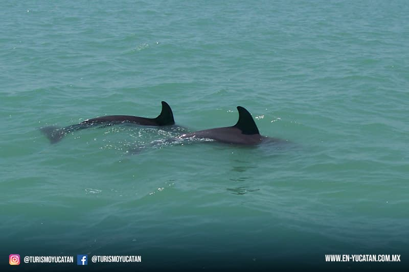
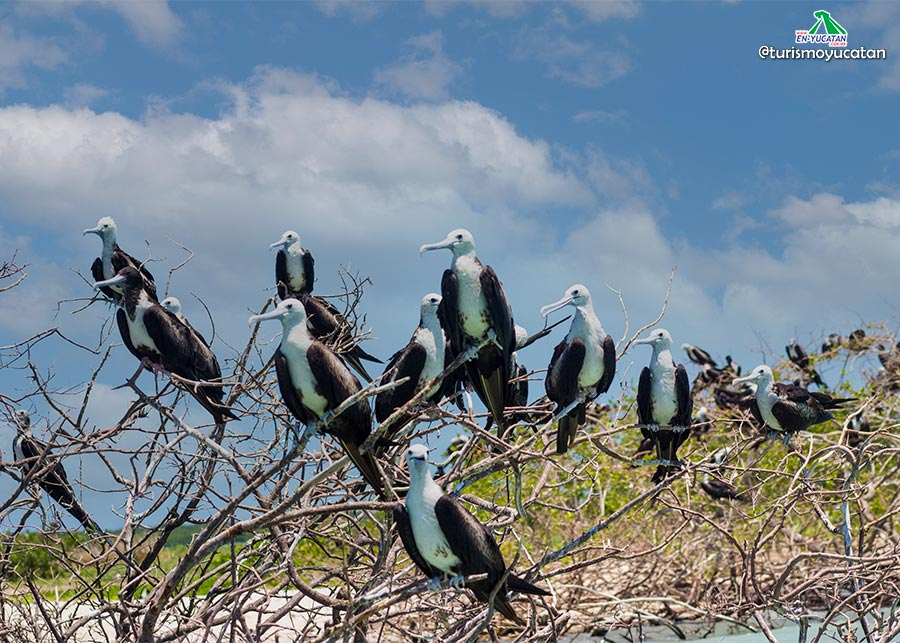
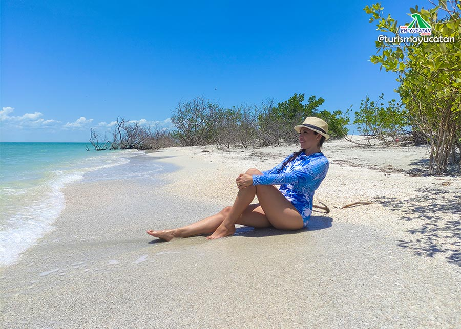

|  |  |  |
|---|---|---|
Tour de Observación de Delfines en Isla Aguada Prepárate para embarcarte en un emocionante tour de observación de delfines mientras exploras las maravillas naturales de esta región. Durante esta experiencia inolvidable, tendrás la oportunidad de admirar de cerca a estos magníficos mamíferos marinos en su hábitat natural. |
Isla de los Pájaros visitaremos la isla de los pájaros, en la lancha desde la Laguna de Términos a una distancia prudente podremos observar a las aves que habitan en esta isla en su mayoría fragatas y cormoranes a los cuales también se les conoce como “patos buzos”. |
Isla El Arenal Esta es la isla más grande de nuestro recorrido por lo que aquí si descenderemos el barco para disfrutar un tiempo libre en sus hermosas playas, en ella hay una palapa grande para protegernos del sol y justo detrás de ella podremos observar una pequeña laguna donde hay garzas, gaviotas, pelicanos, cormoranes, si la visitas en época de reproducción es muy probable que veas los polluelos de todas estas especies de aves, te recomendamos mantener una distancia prudente para no molestarlos, también en el área podremos observar mantarrayas. Aquí puedes aprovechar el tiempo para tomarte unas fotos espectaculares y para compartir con tus familiares y amigos con el fin de motivarlos a visitarnos. |